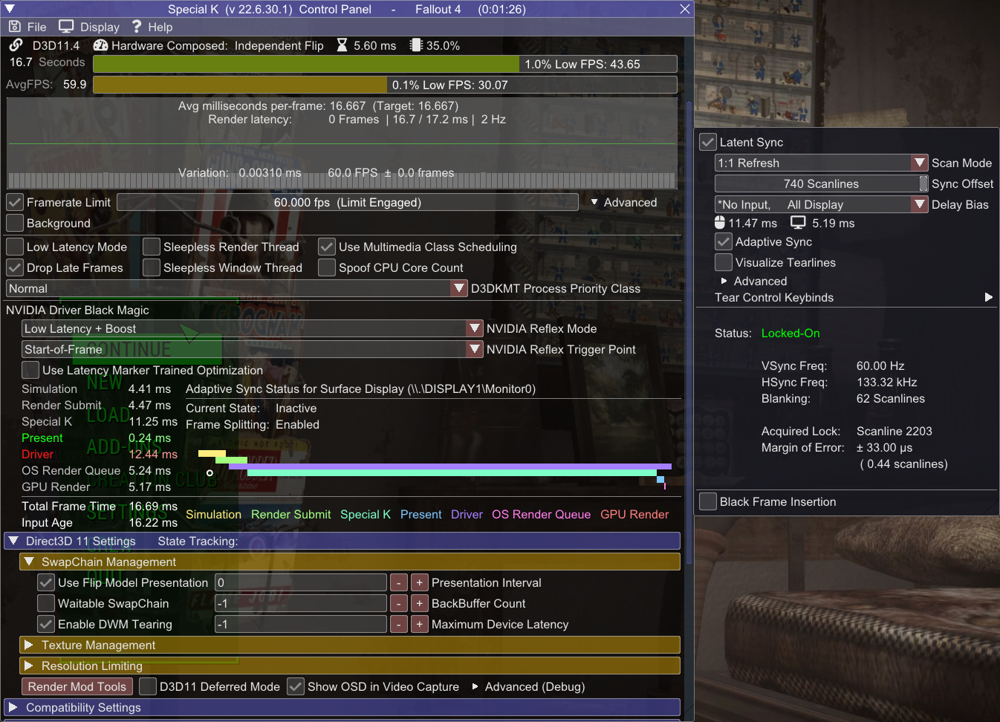

Introduction
Welcome!
This is a little spin-off for Fallout 4 made in collaboration with the The Midnight Ride guide.If you want to see the full guide dedicated to Fallout New Vegas, go here.
Terminology
Things that are good to know
-
Vertical Synchronization (V-Sync) - technology allowing to keep display's scanout and refresh in phase to eliminate screen tearing,
at the cost of higher latency.
(Latency lowers along with refresh rate) - G-Sync | Freesync - Variable Refresh Rate (VRR) technologies developed by NVIDIA and AMD respectively. They allow the display to adapt its refresh rate to the framerate, allowing to use V-Sync at arbitrary framerates and reduce its latency[1] .
- Multiplane Overlays (MPOs) - hardware scanout planes for the GPU. They allow for hardware image composition without any latency or performance penalty (for example displaying windows on top of each other), as well as their hardware scaling and stretching. MPOs are supported since Windows 8.1. Hardware capabilities vary between GPU manufacturers.
- Yes, despite popular misinformation, VRR alone doesn't get rid of tearing. It can minimize the rolling tear however, but that varies between displays, and such, it's not a guaranteed feature. Additionally, the latency reduction applies only at framerates below V-Sync window (display's native refresh rate) - if framerate matches the native refresh rate, VRR engages V-Sync emulation.
Technicalities
More text inside. Explains the concept of presentation models and display modes. While not needed to use the guide, it'll help you with understanding why things are the way they are.Graphics Drivers and Windows
Driver Updates
Not much to say here - for the best compatibility and performance, you must be using the newest driver for your graphics card.
You can check what GPU you have by opening Task Manager, and going to the Performance tab - the last GPU on the left pane is your main one.
Select your graphics card to go the driver download page |
||
|---|---|---|
Windows watermark
Make sure your Windows is activated, otherwise the watermark will kick the game into the DWM composition.
If you don't have a GPU with MPO (Multiplane Overlay) support, you can mitigate this by disabling Fullscreen Optimizations.
It's still weird to have unactivated Windows though.
How to check if your GPU supports MPOs:
- Type dxdiag into Windows search
- Click Save All Information and save the file.
- Open the DxDiag.txt file, press Ctrl+F and look for MPO MaxPlanes
- If the number is greater than 1, then your GPU has MPO support.
Having the watermark without MPOs will disable VRR and increase latency and stuttering!
If you have:
- Nvidia 16 series and newer
- AMD Vega and newer
- Intel CPUs 8th Gen and newer
Virtualization
Windows 11 uses virtualization features to increase OS and inter-process security. Unfortunately, this can come at a performance cost, especially on lower-end hardware.I won't be writing on how to disable them, because... Microsoft already made a tutorial about it.
This step is not mandatory, as when it comes to security, it's up to you to decide. Just letting you know that this exists, and even Microsoft acknowledges the fact that it can degrade perfomance.
Display mode
Clarifications
As you may have noticed, the guide makes you use Windowed Mode instead of classic, Fullscreen Exclusive. If you are concerned about the performance loss or not working G-Sync, don't be!FPS Fix enables Flip Model, which like I mentioned before, allows windowed games to run with a fullscreen level of performance and latency, alongside with VRR support (and more).
Thus running the game in legacy fullscreen mode is not worth it, and has no benefits. Welcome to the
Recommended framerate limiters and their configurations
(Not) Pushing the limits
Limiting framerate is very important for overall stability.First and foremost, if you are using a good limiter, you'll be implementing correct framepacing, which is the most important think for the overall fell of fluidity.
More advanced limiters can also reduce latency or power consumption (It's difficult to have both).
Always limit your framerate to an amount you can actually achieve, otherwise you won't get any benefits!
Letting your GPU overwork itself has a big latency impact, so try to cap your framerate at such value, where your GPU doesn't sit at constant 100% usage.
Running at smoother, lower framerate is always better than high, albeit laggy and stuttery one.
Recommended setups
Recommended configurations based on selected display scenarios:-
V-Sync
- Framerate must be capped slightly below refresh rate to reduce latency
V-Sync on its own is NOT a limiter. Using it as one introduces a latency penalty
-
G-Sync | Freesync
- V-Sync must be enabled, in order to fully get rid of tearing
- Framerate must be capped below refresh rate, in order for VRR to not disengage and fallback to V-Sync, as this causes a very big increase in latency
-
No V-Sync
- No special prerequisites.
So many options...
Both limiters presented here are comparable in terms of precision, but Special K trumps RTSS when it comes to latency, at the cost of lack of ENB compatibility and slightly higher power usage.
Special K
Special K is a mod by Kaldaien focused mainly on fixing performance in games and implementing HDR.Its list of features is too long to write here, but the most important one used here is its incredibly versatile limiter and HDR.
Warning!
- Special K may conflict with Riva Tuner. If the game crashes or SK doesn't show up in game, make sure Riva Tuner is not running, or set Riva Runer's injection delay to 30000.
- Special K is not compatible with ENB.
- Special K somehow breaks left click in FO4's world map, unless you have cursor set to Unrestricted. If you are a multimonitor user, I recommend to skip Special K until the issue is resolved.
I'm not providing calculated values here, because Special K already does that automatically, and with higher precision
If you don't use, or not have VRR, it's best to limit your framerate to fractions of your refresh rate. (30 at 60hz, 72 at 144hz, etc.)
Installation
- Download the Special K Archive from the Stable section, then extract SpecialK64.dll to your Fallout 4 root folder and rename it to dxgi.dll
- Launch Fallout 4 and press Ctrl + Shift + Backspace to enter Special K Control Panel
-
Enable the Framerate Limit by ticking the checkbox, then right click on the bar (not graph) next to it:
-
No V-Sync
In right click menu select your refresh rate
Optional - Disabled V-Sync with no tearing

-
V-Sync
In right click menu select your refresh rate
In Direct3D 11 Settings, under SwapChain Management:
- Enable Waitable SwapChain
- Set BackBuffer Count to 3
- Set Maximum Device Latency to 4
-
VRR + V-Sync
In right click menu select VRR Bias and select the highest value.
- The bias option is not needed for lower values.
In Direct3D 11 Settings, under SwapChain Management:
- Set BackBuffer Count to 3
- Set Maximum Device Latency to 2
-
No V-Sync
- Open the HDR menu at the top of Special K's control panel menu and press the HDR Setup button.
- Select the scRGB HDR option from the HDR Calibration widget.
- Restart the game.
- For more information, see Special K Wiki
Your configuration should look similar to this

If you have a HDR compatible display, you can use Special K to output in native HDR!
Keep in mind that it will decrease your performance due to higher render bit depth.
RivaTuner Statistics Server
Riva Tuner Statistic Server by Unwinder is probably the most famous FPS Limiter and OSD software, thanks to its performance, compatibility and power usage.Finish
Finish Line
Congratulations! You've made it through! I hope this guide helped you making Fallout 4 a smoother experience.If you have any issues, questions, critiques or recommendations hit me up on Discord - wall_sogb.
You can also find me on ModdingLinked, xNVSE, Tale of Two Wastelands servers.
To do
-
Test Doodlezoid's Reflex implementations
- Test compatibility with SK
- Check if they differ in any way
-
Check how good is Reflex's limiter
Somehow it's horrible. MS Hybrid issue?
- Test DLSS | FSR | XeSS once they are finished